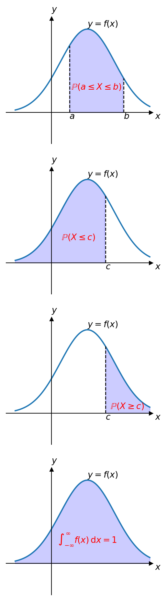
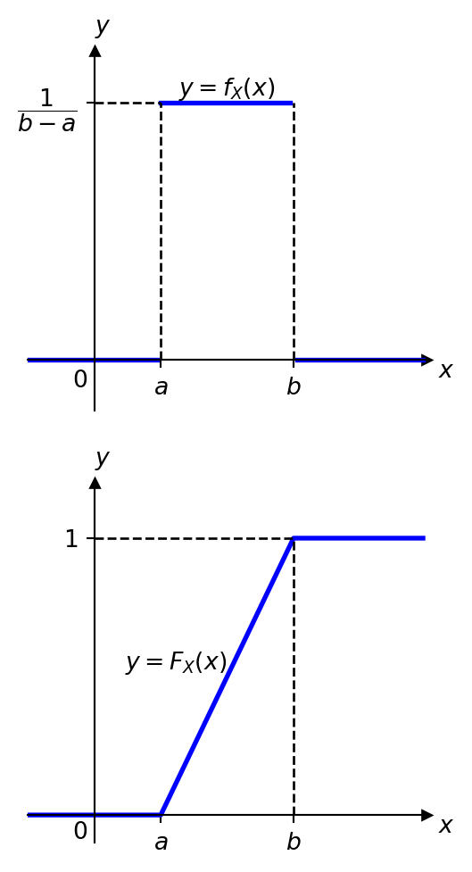
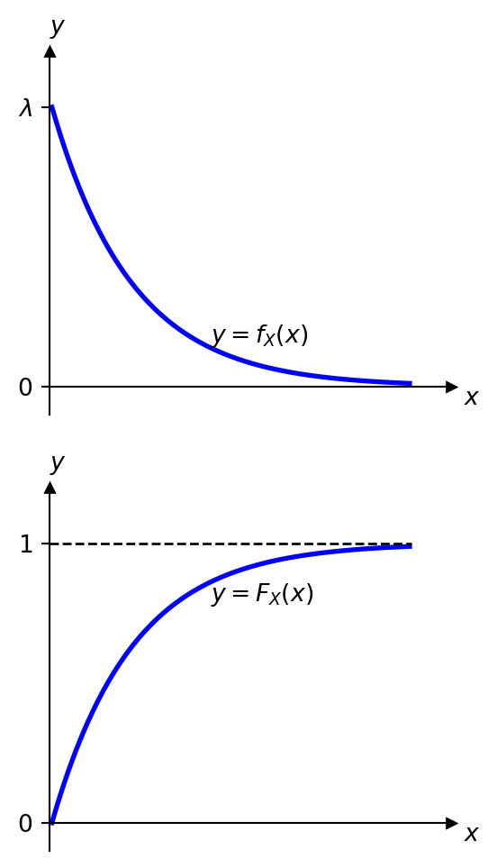
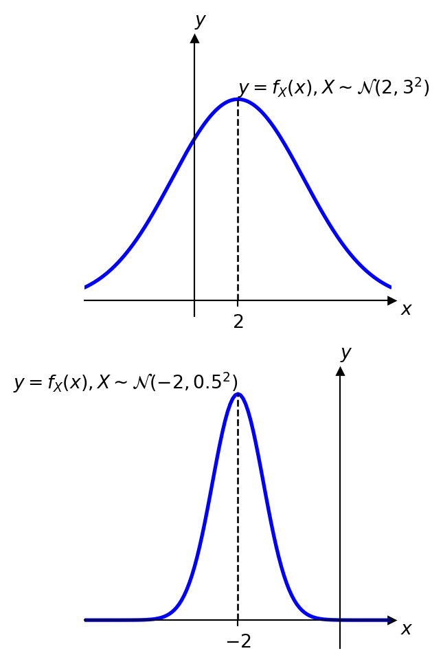
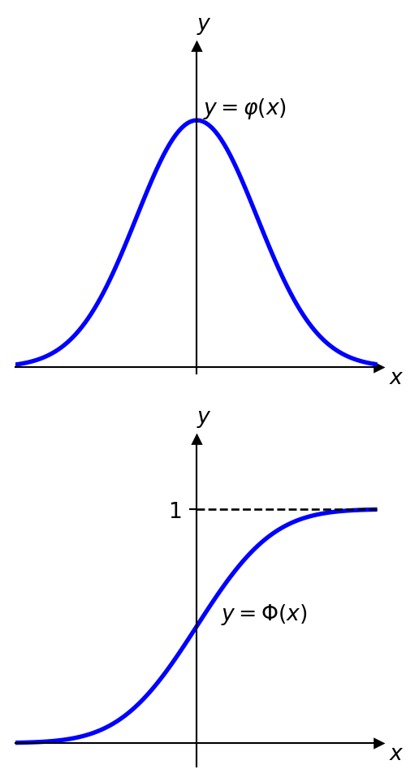
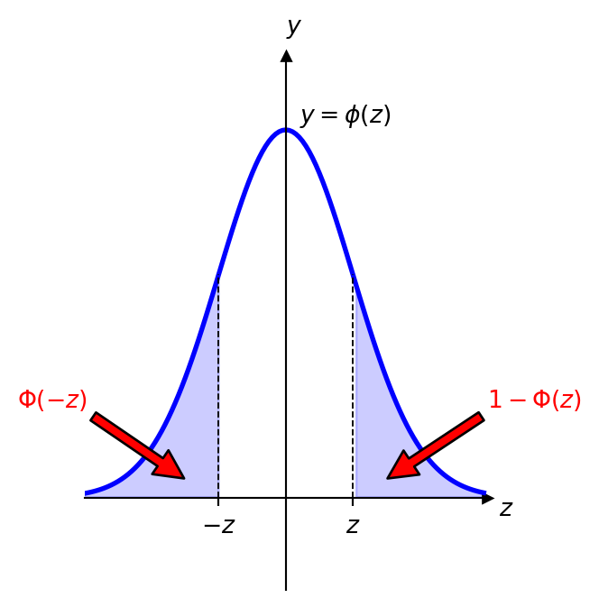
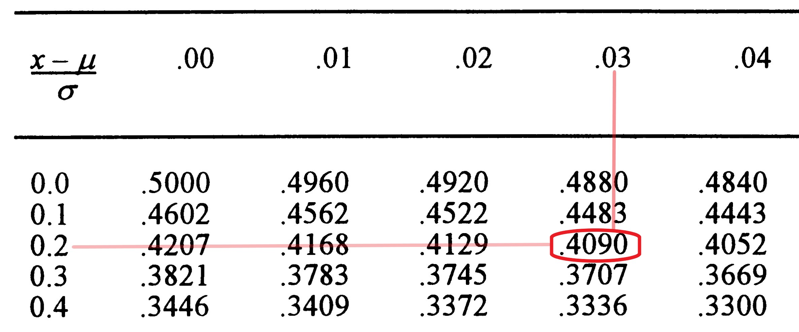

Topic 5 — Continuous Probability Distributions
\[ \renewcommand{\P}{\mathbb{P}} \renewcommand{\E}{\mathbb{E}} \newcommand{\R}{\mathbb{R}} \newcommand{\var}{\mathrm{Var}} \newcommand{\cov}{\mathrm{cov}} \newcommand{\corr}{\mathrm{corr}} \newcommand{\dx}{\,\mathrm{d}x} \newcommand{\dy}{\,\mathrm{d}y} \newcommand{\eps}{\varepsilon} \]
Continuous Random Variables
Recall: a random variable is a function \(X:\Omega\to\mathbb{R}\), and its CDF is \(F_X(x):=\P(X\le x)\), with \(0\le F_X(x)\le1\) and \(\P(a<X\le b)=F_X(b)-F_X(a)\).
So far we discussed the discrete case, \(X:\Omega\to\{x_1,x_2,x_3,\dots\}\). Often we need a continuous range of values instead: \(X:\Omega\to\mathbb{R}\), or \(X:\Omega\to[a,b]\), etc.
A random variable \(X\) is called continuous if there exists a function \(f_X:\mathbb{R}\to[0,\infty)\), called the probability density function (PDF) of \(X\), such that \[ \P(a<X\le b) = \int_a^b f_X(x)\dx. \]
Properties of the PDF
- \(f_X(x)\geq0\)
- \(\displaystyle \int_{-\infty}^\infty f_X(x)\dx =1\)
- \(\displaystyle F_X(x)=\int_{-\infty}^x f_X(y)\dy\)
- \(\displaystyle f_X(x) = \frac{d}{dx}F_X(x)=F_X'(x)\)
Zero-Probability Points and Useful Formulas
For a continuous random variable, \(\P(X=a)=0\) for all \(a\in\mathbb{R}\), since \(\int_a^a f_X(x)\dx=0\). Hence \[ \P(a\leq X\leq b)=\P(a\leq X< b)=\P(a< X\leq b)=\P(a< X< b)= \int_a^b f_X(x)\dx. \]
\[ \P(X\leq c) =\P(X< c) = F_X(c)=\int_{-\infty}^c f_X(x)\dx, \qquad \P(X\geq c) = \P(X> c) = 1- F_X(c)=\int_c^{\infty} f_X(x)\dx. \]
Expected Value and Variance
If \(X:\Omega\to\mathbb{R}\) is a continuous random variable, its expected value is \[ \E(X):=\int_{-\infty}^\infty x \cdot f_X(x)\dx \] (provided the integral is finite).
More generally, for \(g:\mathbb{R}\to\mathbb{R}\), \[ \E\bigl( g(X)\bigr) = \int_{-\infty}^\infty g(x) f_X(x) \dx, \qquad\text{in particular}\qquad \E(X^2)= \int_{-\infty}^\infty x^2 f_X(x) \dx. \]
The variance of \(X\) is \(\var(X) = \E\bigl((X - \E(X))^2\bigr)=\E(X^2) - (\E(X))^2\geq0\). For a continuous random variable, \[ \var(X) = \int_{-\infty}^\infty x^2\cdot f_X(x)\dx -\biggl(\int_{-\infty}^\infty x\cdot f_X(x)\dx \biggr)^2. \]
The Uniform Distribution
The uniform distribution is a continuous probability distribution where all outcomes within a specified interval \([a,b]\) are equally likely.
Since \(f_X\) is constant, say \(= \mathrm{const}\), on \([a,b]\) and \(0\) outside, and the total area must be \(1\): \[ 1 = \int_{-\infty}^{\infty} f_X(x)\,dx = \underbrace{\int_{-\infty}^{a}}_{=0} + \int_a^b \mathrm{const}\,dx + \underbrace{\int_b^{\infty}}_{=0} = \mathrm{const}\cdot(b-a) \ \Longrightarrow\ \mathrm{const} = \frac{1}{b-a}. \]

\[ f_X(x) = \begin{cases} \dfrac{1}{b-a}, & a \leq x \leq b \\[3mm] 0, & \text{otherwise}, \end{cases} \qquad F_X(x) = \begin{cases} 0, & x<a\\[3mm] \dfrac{x-a}{b-a}, & a \leq x \leq b \\[3mm] 1, & x>b. \end{cases} \] Notation: \(X\sim U(a,b)\).
Indeed, \(\displaystyle \E(X) = \int_a^b x\cdot\frac{1}{b-a}\,dx = \frac{1}{b-a}\left[\frac{x^2}{2}\right]_a^b = \frac{1}{2(b-a)}(b^2-a^2) = \frac{a+b}{2}.\)
\[ \E(X) = \dfrac{a+b}{2},\qquad \var(X) = \dfrac{(b-a)^2}{12}. \]
If \([c,d]\not\subset[a,b]\), one must intersect with \([a,b]\) first — e.g. for \(X\sim U(1,5)\), \(\P(0\le X\le4)\neq\frac{4-0}{5-1}\); instead \(\P(0\le X\le4)=\P(1\le X\le4)=\frac{4-1}{5-1}=\frac34\).
Example: Uniform Distribution
Let \(X\sim U(1,5)\).
a) Find \(\P(2 < X <4)\).
Solution: \(f_X(x) = \frac{1}{5-1}=\frac{1}{4}\) on \([1,5]\), so \[ \P(2 < X <4) = \int_2^4\frac14\dx =\frac14\cdot(4-2)=\frac12. \]
b) Find \(c\in[1,5]\) such that \(\P(3 < X <c) = \dfrac13\).
Solution: \[ \dfrac13=\int_3^c \frac14\dx=\frac14(c-3) \ \Longrightarrow\ c-3=\frac43 \ \Longrightarrow\ c=\frac{13}{3}\in[1,5]. \]
Note that \(\frac13=\P(3<X<c)=F_X(c)-F_X(3)\), so \(F_X(c)=F_X(3)+\frac13\); on a computer this could be solved for \(c\) using the quantile (inverse CDF) function.
The Exponential Distribution
Recall that the (discrete) Poisson random variable models the number of independent events occurring in a fixed interval of time. The exponential distribution is a continuous probability distribution that models the time between these independent events. It is commonly used to model waiting times.

The PDF of the exponential distribution with parameter \(\lambda>0\) is \[ f_X(x) = \begin{cases} \lambda e^{-\lambda x}, & x \geq 0 \\ 0, & \text{otherwise}, \end{cases} \qquad F_X(x) = \begin{cases} 1- e^{-\lambda x}, & x \geq 0 \\ 0, & \text{otherwise}. \end{cases} \]
Notation: \(X\sim \mathrm{Exp}(\lambda)\). The mean and variance are \[ \E(X) = \dfrac{1}{\lambda}, \qquad \var(X) = \dfrac{1}{\lambda^2}. \]
Example: Bus Arrivals (Exponential)
Suppose the time between arrivals at a bus stop follows an exponential distribution with rate \(\lambda = 0.05\) arrivals per minute.
a) Probability the next bus arrives within \(10\) minutes: \[ \P(X \leq 10) = F_X(10)= 1 - e^{-0.05 \cdot 10}=1-e^{-0.5}\approx 0.3935. \]
b) Probability of waiting at least \(15\) minutes: \[ \P(X\geq15)=1-F_X(15)=e^{-0.05\cdot 15}=e^{-0.75}\approx 0.4724. \]
c) Average waiting time: \[ \E(X)=\frac{1}{0.05}=20 \text{ minutes.} \]
The Normal Distribution
The Normal distribution is also known as the Gaussian distribution. Its PDF is symmetric, often called bell-shaped. It is widely used in probability and statistics, especially because of the central limit theorem (later in this course): averages of large samples behave “normally”, regardless of the individual behaviour of the elements in the sample.

The normal distribution with mean \(\mu\in\mathbb{R}\) and standard deviation \(\sigma>0\) is the continuous probability distribution with PDF \[ f_X(x) = \frac{1}{\sqrt{2\pi}\sigma} e^{-\frac{(x-\mu)^2}{2\sigma^2}}. \] Notation: \(X\sim \mathcal{N}(\mu,\sigma^2)\), and \(\E(X)=\mu\), \(\var(X)=\sigma^2\).
For example, \(X\sim N(2,9)\) means \(\mu=2\), \(\sigma=3\) (not \(\sigma=9\)) — the second parameter is the variance \(\sigma^2\).
Informally, \(\P(X\in\Delta)\approx f_X(x)\cdot|\Delta|\) for a very short interval \(\Delta\) of length \(|\Delta|\to0\), \(x\in\Delta\).
The Standard Normal Distribution
The simplest case of a normal distribution is the standard normal distribution (or unit normal distribution), with \(\mu=0\), \(\sigma=1\). The PDF of \(X\sim\mathcal{N}(0,1)\) has special notation: \[ \varphi(x):=\frac{1}{\sqrt{2\pi}} e^{-\frac{x^2}{2}}. \] For \(X\sim \mathcal{N}(\mu,\sigma^2)\) generally, \(f_X(x)= \frac{1}{\sigma}\varphi\bigl( \frac{x-\mu}{\sigma} \bigr)\).

\[ \Phi(x):=\int_{-\infty}^x \varphi(y)\dy=\frac{1}{\sqrt{2\pi}}\int_{-\infty}^x e^{-\frac{y^2}{2}}\dy. \] This function cannot be expressed in terms of elementary functions — we use computer or statistical tables for its values.
It can be shown that if \(X\sim \mathcal{N}(\mu,\sigma^2)\) then \[ F_X(x) = \Phi\Bigl( \frac{x-\mu}{\sigma} \Bigr) = \Phi(z), \qquad z=\frac{x-\mu}{\sigma}. \] Also, \(\Phi(-z) = 1-\Phi(z)\).

Using Standard Normal Tables
Statistical tables usually give \(1-\Phi(z)\) for \(z\geq0\). This immediately answers \(\Phi(-z)=1-\Phi(z)\) and \(\Phi(z)=1-(1-\Phi(z))\).

From the table: \[ 1-\Phi(0.63) = 0.2643 = \P(X>0.63), \qquad 1-\Phi(2.85) = 0.00219 = \P(X>2.85). \] Then \(\Phi(-0.63)=1-\Phi(0.63)=0.2643\), and \(\Phi(0.63)=1-0.2643=0.7357\).
Example: Heights (Normal Distribution)
Calculate the probability that a randomly selected individual has a height between \(162\) cm and \(169\) cm, given that the population mean height is \(165\) cm and standard deviation \(10\) cm, with heights following a normal distribution.
Solution: \(X\sim\mathcal{N}(\mu,\sigma^2)\), \(\mu=165\), \(\sigma=10\). We need \(\P(162 \leq X \leq 169)\).
Let \(Z=\dfrac{X-\mu}{\sigma}\sim N(0,1)\). Then \[ \P(162 \leq X \leq 169)=\P\Bigl(\tfrac{162-165}{10}\leq Z \leq \tfrac{169-165}{10}\Bigr)=\P(-0.3\leq Z \leq 0.4)=\Phi(0.4)- \Phi(-0.3). \]
From the table, \(1-\Phi(0.4)=0.3446\) and \(1-\Phi(0.3)=0.3821\), so \[ \Phi(0.4)=0.6554, \qquad \Phi(-0.3)=0.3821, \]
\[ \P(162 \leq X \leq 169)= 0.6554-0.3821=0.2733. \]
We can also check this with Python:
from scipy.stats import norm
norm.cdf(0.4) - norm.cdf(-0.3)0.2733331637992768